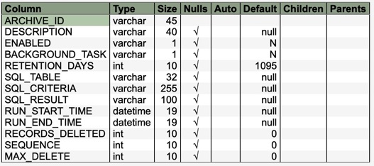

Package com.commander4j.db
Class JDBArchive
java.lang.Object
com.commander4j.db.JDBArchive
JDBArchive class is used to insert/update/delete the SYS_ARCHIVE table. The
SYS_ARCHIVE table is a user definable auto archiving system. In essence a SQL
delete statement with date parameter can be inserted into this table. At a
predetermined interval the Archiving Thread executes each statement in this
table to remove old/unneeded records from tables.

-
Field Summary
FieldsModifier and TypeFieldDescriptionstatic intstatic intstatic intstatic intstatic intstatic int -
Constructor Summary
Constructors -
Method Summary
Modifier and TypeMethodDescriptionvoidclear()booleanbooleandelete()getArchiveDataResultSet(PreparedStatement criteria) booleanbooleangetArchiveProperties(String archid) voidintintbooleanbooleanbooleanbooleanbooleanisValidArchive(String archid) booleanvoidrunSQL(int action) runSQLDelete(String archid) voidrunSQLSelect(String archid) voidsetArchiveID(String type) voidsetBackgroundTask(boolean yesno) voidsetBackgroundTask(String yesno) voidsetDescription(String description) voidsetEnabled(boolean yesno) voidsetEnabled(String yesno) voidsetMaxDelete(Long max) voidsetRecordsDeleted(Long recs) voidsetRetentionDays(int ret) voidvoidsetRunStart(Timestamp start) voidsetSequence(int seq) voidvoidsetSQLResult(String id) voidsetSQLTable(String id) booleanupdate()boolean
-
Field Details
-
Action_Select
public static int Action_Select -
Action_Delete
public static int Action_Delete -
field_archive_id
public static int field_archive_id -
field_description
public static int field_description -
field_sql_table
public static int field_sql_table -
field_sql_criteria
public static int field_sql_criteria
-
-
Constructor Details
-
JDBArchive
-
JDBArchive
-
-
Method Details
-
reportData
-
clear
public void clear() -
create
-
delete
public boolean delete() -
getArchiveDataResultSet
-
getArchiveDataResultSet
-
getArchiveID
-
getArchiveProperties
public boolean getArchiveProperties() -
getArchiveProperties
-
getArchives
-
getBackgroundTask
-
getDescription
-
getEnabled
-
getErrorMessage
-
getJobList
-
getPropertiesfromResultSet
-
getRecordsDeleted
-
getMaxDelete
-
setMaxDelete
-
getRetentionDays
public int getRetentionDays() -
getRunEnd
-
getRunStart
-
getSequence
public int getSequence() -
getSQLArchiveDate
-
getSQLCriteria
-
getSQLResult
-
getSQLTable
-
isBackgroundTask
public boolean isBackgroundTask() -
isEnabled
public boolean isEnabled() -
isRunable
public boolean isRunable() -
isValidArchive
public boolean isValidArchive() -
isValidArchive
-
renameTo
-
runManual
-
runSQL
-
runSQLDelete
-
runSQLJobList
public void runSQLJobList() -
runSQLSelect
-
setArchiveID
-
setBackgroundTask
public void setBackgroundTask(boolean yesno) -
setBackgroundTask
-
setDescription
-
setEnabled
public void setEnabled(boolean yesno) -
setEnabled
-
setRecordsDeleted
-
setRetentionDays
public void setRetentionDays(int ret) -
setRunEnd
-
setRunStart
-
setSequence
public void setSequence(int seq) -
setSQLCriterial
-
setSQLResult
-
setSQLTable
-
update
public boolean update() -
updateRunStats
public boolean updateRunStats()
-